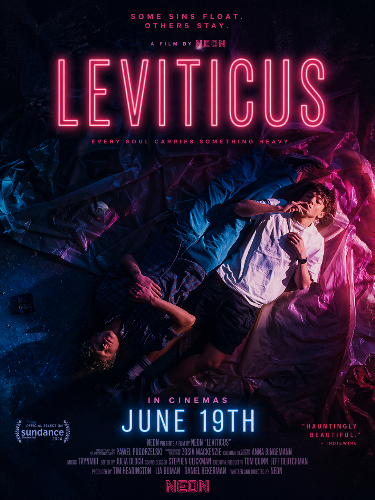
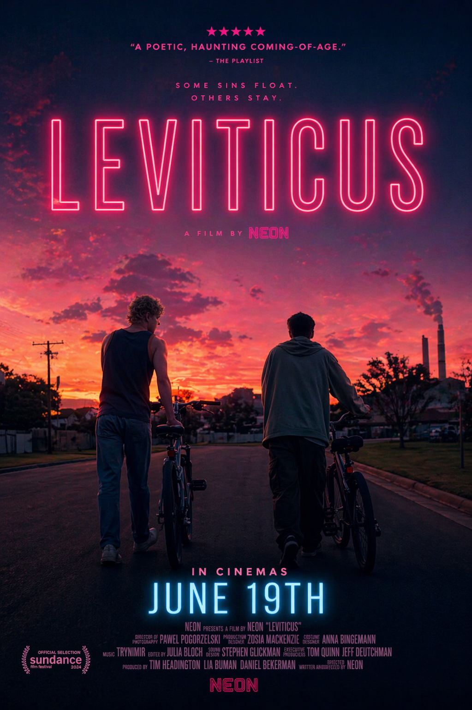

That ambiguity becomes the foundation of Leviticus — a film that resists clarity in favor of psychological texture, unfolding through restraint rather than exposition.
Premiering at the Sundance Film Festival, the work immediately positioned itself within contemporary psychological cinema, where visual silence carries as much weight as dialogue.
“Controlled yet deeply unsettling.” — Variety
“A slow collapse into psychological fragmentation.” — The Guardian
With a 96% Rotten Tomatoes score based on 46 reviews, the film has been widely received as a confident exercise in atmospheric precision, even as audience interpretations remain divided across IMDb and Letterboxd discussions.
The trailer avoids exposition entirely, relying instead on fragmented imagery and restrained pacing to reflect the film’s internal tension.
Official campaign visuals extend this approach through carefully composed stills that emphasize distance, silence, and controlled emotional framing.


Its Sundance debut reinforced its identity as a festival-driven psychological study rather than a conventional release.
Leviticus releases worldwide on June 19, with select regions expected to follow with streaming availability after its theatrical run.